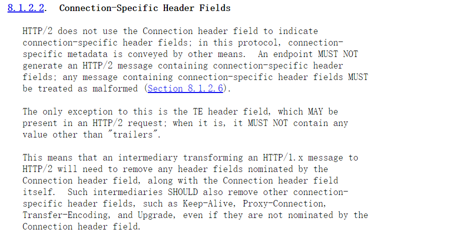

文章首发于安全客，链接https://www.anquanke.com/post/id/249446
一直关注的Black Hat USA 2021议题HTTP/2: The Sequel is Always Worse，最近终于看到相关文档，这里记录下学习到的内容。
关于HTTP/2
HTTP/2标准于2015年5月以RFC 7540正式发表，基于SPDY协议。根据W3Techs的数据，截至2019年6月，全球有36.5%的网站支持了HTTP/2。
新特性
HTTP/2协议相对于HTTP/1.1在性能上有了很大的提升，主要具有以下新特性
- 二进制分帧
- 请求与响应复用
- 服务端推送
- 头部压缩
攻击点
对于这些新特性，都有相对应的攻击点。目前大多数CDN厂商都支持HTTP/2，但是很多后端服务并不支持，所以CDN需要做一个HTTP/2到HTTP/1.x的转换，对于头部压缩特性，需要进行解压，所以导致带宽放大攻击，具体可以看HTTP协议攻击。本文将主要介绍HTTP/2降级导致的走私攻击，对于其他文章中编写的隧道和其他攻击方式，有兴趣的可以查看引用获取资料。
HTTP/2降级走私
产生原因
在 HTTP/1 中，每个消息主体的长度通过内容长度（Content-Length）或传输编码（Transfor-Encoding）header表示。
在 HTTP/2 中，这些header是多余的，因为使用二进制流进行传输，没有文本的概念，消息的内容都是由数据帧（Data Frame）进行传递，每个帧中的内容的长度，是有Length进行记录的。
看似走私并不会在HTTP/2协议中发生（我之前也是这么想的），但是在HTTP/2转换为HTTP/1.x的降级过程中，就会出现新的问题。
前端服务使用HTTP/2协议，使用协议中内在的message的Length，而后端服务却使用HTTP/1.1协议，可以接收到含有CL或者TE的请求，此时就会导致出现HTTP/2协议的走私可能。
案例研究
H2.CL
以Netflix为例，发送此http/2数据
在转换成http/1.1后，内容成为了
1 | POST /n HTTP/1.1 |
对于后端服务来说，这直接导致了走私漏洞，相关漏洞信息可以查看CVE-2021-21295。那么对于完全不需要Content-Length来进行标识请求体长度的HTTP/2协议来说，为什么会出现这个问题呢？
RFC7540编写的十分清晰，HTTP/2请求和响应可以包括Content-Length头，但是对于Content-Length的值和DATA frame的长度不一致的情况，应该视为格式错误。而且第三段明确规定，处理 HTTP 请求或响应的中介（即任何
中介不充当隧道）不得转发格式错误的请求或响应。
H2.TE
此漏洞发生在AWS Application Load Balance中
发送数据包为
后端服务接受到数据包为
1 | POST /identity/XUI/ HTTP/1.1 |
这种走私类型就类似于HTTP/1.1中的CL-TE。
这种漏洞的产生，也是中间件对于Transfor-Encoding的处理出现了错误导致，对于HTTP/2来说，一个TCP连接就可以完成一个客户端和服务端之间持续的数据的传送，所以对于Connection系列字段都是不需要的，所有请求与响应的标识是通过Stream ID来进行的。

RFC7540规定，端点不得生成包含特定于连接的标头的 HTTP/2 消息
领域；任何包含特定连接头的消息必须被视为格式错误，唯一的例外是 TE 头，可以存在于 HTTP/2 请求中，但其不得包含任何“trailers”以外的取值。当然如果中间件需要处理从HTTP/1.x到HTTP/2的转换，是应该删除相关连接头，Keep-Alive, Proxy-Connection, Transfer-Encoding, and Upgrade，即使他们没有被标识为连接头字段。
H2.TE 通过http header值注入
即使中间件正确处理了Transfor-Encoding头，将之删除或者直接返回错误，但是依旧可以参照http/1.1的header注入，来进行走私。

在中间件验证HTTP/2数据包头部是否含有Transfor-Encoding的情况下，直接不把Transfor-Encoding作为一个完整的header字段，而是通过\r\n注入在header中的字段值中，这样就绕过了上文RFC规定的验证。
如果通过转换，其HTTP/1.1请求为
1 | POST / HTTP/1.1\r\n |
这样依旧可以造成走私。
当然在HTTP/2中是二进制流协议，并不像HTTP/1.x需要\r\n来进行每一行的标识。然而当把这些可以在HTTP/1.x中作为标识的字符用在HTTP/2中，在转换过程中，就会让其发挥作用，导致安全问题。RFC也考虑到此问题
如果这些字符如CRLF，0x0，被逐一解析，可能被攻击者利用，所以规定任何请求或响应包含头字段值中不允许的字符必须被视为格式错误，当然很明显并不是多有中间件都遵守此规定。
H2.TE 通过header name注入
上文提到，通过在header字段中，添加\r\n来进行Transfor-Encoding的注入，从而绕过HTTP/2协议中不允许Transfor-Encoding字段的规定，那么可以在header name中也实现注入，这种情况就需要另外一个危险字符:
转换HTTP/1.1后，数据包为
1 | GET / HTTP/1.1 |
依旧可以使用Transfor-Encoding来进行走私。
H2.TE 通过请求行注入
如果中间件只是修复了普通Header中关于危险字符的过滤，那么对于foo或者Transfor-Encoding字段来说，并不能使用，所以作者使用伪标头来进行注入，在HTTP/2中，所有标头字段名称均为小写，请求行拆分成各个:method、:scheme、:authority 和 :path 伪标头字段，以:method为例
将走私请求直接注入到method中
1 | GET / HTTP/1.1 |
所以中间件对于header中危险字符的过滤，应该把所有字段都进行处理。
H2.X 通过请求拆分
既然可以注入\r\n，作者又直接将整个走私请求注入到header处，以达成攻击。
这种方式，更加简单粗暴，只要中间件在转换过程中，逐一识别危险字符\r\n，那么转换成的HTTP/1.1数据就为
1 | GET / HTTP/1.1 |
这种走私，不需要使用Transfor-Encoding编码，也不需要body和POST方法。
总结
随着HTTP/2的普及，更多中间件开始支持HTTP/2，来提高网站的性能，无论是CDN或者WAF，未来可能都会使用HTTP/2，但是后端服务只支持HTTP/1.x的情况也会很常见，所以中间件必须将HTTP/2转换为HTTP/1.x，才能与后端服务通信，如果在实现上没有考虑很多安全问题，这种协议的降级造成的危害是致命的，无论是带宽放大，还是走私，或者缓存投毒。业务层可以尽量避免协议的降级，如果无法避免，应该在实现上，尽量按照RFC规定来进行实现，防止出现严重的安全问题。
引用
https://www.blackhat.com/us-21/briefings/schedule/#http2-the-sequel-is-always-worse-22668
https://i.blackhat.com/USA21/Wednesday-Handouts/us-21-Kettle-HTTP-The-Sequel-Is-Always-Worse.pdf
https://i.blackhat.com/USA21/Wednesday-Handouts/us-21-Kettle-HTTP2-The-Sequel-Is-Always-Worse-wp.pdf